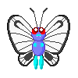
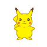

-
bulbasaur #001

- Grama
- Veneno
Pós, cheiros, pétalas e sementes podem vir da ponta do bulbo, e vinhas e folhas podem vir da base. Ao manipular-los em movimentos como Semente sanguessuga , Chicote de Vinha, Folha Navalha, Dança de Pétalas, Bomba de Semente, and Doce Incenso, Bulbasaur tem um arsenal muito à sua disposição.
-
ivysaur #002

- Grama
- Veneno
A capacidade Ivysaur é Overgrow, o que aumenta o poder dos ataques do tipo Grama em 50%, quando o Pokémon tem menos de um terço do seu máximo HP. O bulbo que ele carregava em suas costas como um Bulbasaur tem crescido em uma flor cheia quando ele já tinha evoluído e pode crescer na luz solar.
-
venusaur #003

- Grama
- Veneno
Nas megarreides ele tem 50653 de Poder de Combate (CP). Na captura, virá o Venusaur, com o CP variando entre 1480 e 1554. Caso o clima esteja ensolarado ou nublado, a criatura estará potencializada, e o CP irá variar entre 1851 e 1943. Com seu IV máximo, o Mega Venusaur alcança 3698 de CP.
-
charmander #004

- Fogo
Charmander tem uma capacidade, que permite que seus ataques do tipo Fogo para causar 150% de dano se a sua saúde cai abaixo de 30%. Como uma habilidade natural, Charmander pode produzir chamas dentro de si e projetá-las de sua boca, o que significa que ele pode respirar fogo.
-
charmeleon #005

- Fogo
Charmander e Charmeleon são baseados nos caudados, uma ordem de anfíbios, que compreende as salamandras e os tritões. As principais características desses animais são corpo alongado, patas curtas e uma cauda relativamente longa
-
charizard #006

- Fogo
Enquanto suas pré-evoluções Charmander e Charmeleon são criaturas semelhantes a lagartos terrestres, Charizard se assemelha a um grande tradicional dragão europeu.
-
squirtle #007

- Agua
Squirtle é um pequeno Pokémon, azul-claro com uma aparência semelhante ao de uma tartaruga. Como tartarugas, Squirtle tem um escudo que cobre seu corpo com orifícios que permitem que seus membros, cauda e cabeça para ser exposto. Ao contrário de uma tartaruga, Squirtle é normalmente bípede.
-
wartortle #008

- Agua
Wartortle são pequenos bípedes Pokémon, tartarugas com uma aparência semelhante à de sua forma pré-evoluída, Squirtle. Algumas diferenças são que Wartortles desenvolveram garras e os dentes mais nítidas e maiores
-
blastoise #009

- Agua
Pokémon Unite - Blastoise. Blastoise tem um corpo enorme para proteger seus aliados e poder o bastante para detonar seus oponentes com ataques aquáticos. Seu Unite Move é Hydro Typhoon. Blastoise começa a girar, lançando poderosos jatos d'água que mandam os Pokémon oponentes ao redor para longe.
-
caterpie #010

- Inseto
Caterpie é descrito como "Worm Pokémon" ou Pokémon Larva. Caterpie é uma larva verde e amarela, com anéis amarelos pelos segmentos do corpo. Possui olhos negros e amarelados e uma antena vermelha. Sua cauda também é amarelada.
-
metapod #011

- Inseto
Pokémon Metapod - Pokémon 1 gerações no número 11 em Pokédex. Vive na região de Kanto e pertence ao tipo de insetos. Depois de comer 50 doces, Caterpie se transforma em um Pokémon Sem manchas. A concha que cobre o corpo do Pokémon Cocoon é tão dura quanto uma placa de ferro.
-
butterfree #012
- Inseto
Butterfree tem uma capacidade superior para procurar mel delicioso de flores. Pode até procurar, extrair e transportar mel de flores que estão desabrochando a mais de 10 quilômetros do ninho.
-
Pikachu #025
- Elétrico
Seu ataque mais conhecido é o Choque do Trovão. Os outros ataques são: Cabeçada, Investida, Agilidade, Relâmpago e Raio do Trovão. Pikachu é pequeno e tem muita semelhança com ratos. Na série para videogames, ele é encontrado em florestas, sendo facilmente visto na Floresta Viridian, ou ainda na Zona de Safari.